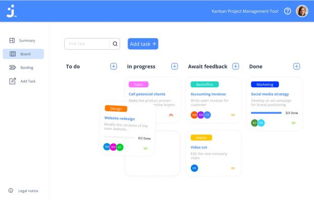

<div class="project" (mouseover)="removeGrayscale()" (mouseout)="addGrayscale()">
    <div id="project-info1" class="project-info">
        <h1>Join</h1>
        <h2>Angular | TypeScript | HTML | CSS | Firebase</h2>
        <span>Task manager inspired by the Kanban System. Create and organize tasks sing drag and drop functions, assign
            users and categories.</span>
        <a href="https://github.com/TherealBarbos/Developer_Akademie_Join"><button> Github</button></a>
    </div>
    
    <div id="frame1" class="frame d-none"></div>
    <span>01/04</span>
</div>